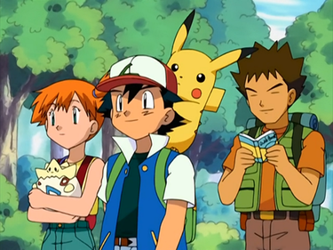
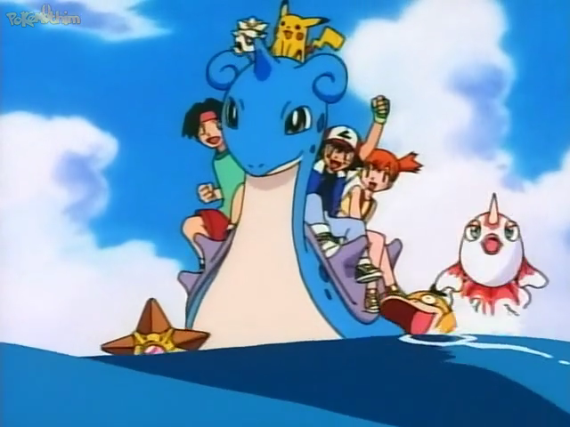

Bem Vindo ao site Mestre Pokémon
Temporada 1: Ligua Índigo

A primeira temporada de Pokémon, conhecida como Pokémon: Liga Índigo, acompanha a jornada de Ash Ketchum, um garoto de 10 anos da cidade de Pallet, que sonha em se tornar um Mestre Pokémon.
Clique aqui
Temporada 2: Aventuras nas Ilhas Laranja

Ínicio da Jornada:
A segunda temporada de Pokémon, chamada Pokémon: Aventuras nas Ilhas Laranja, segue Ash Ketchum após suas aventuras na Liga Índigo. Aqui estão os principais pontos:
Clique aqui